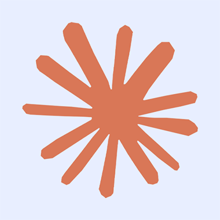

Usporedba Mogućnosti AI Alata
Google Gemini
Multimodalni model koji izvrsno radi s tekstom, slikama i kodom. Razvijen od strane Google DeepMind.
OpenAI ChatGPT
Pionir u generativnim AI modelima. GPT-4 podržava multimodalni unos i pokazuje izvrsne rezultate u razumijevanju i generiranju teksta.

Anthropic Claude
Model fokusiran na dugački kontekst i sigurnu interakciju. Claude 3 može obraditi do 200,000 tokena, omogućujući analizu knjiga i dugih dokumenata.
Ključni Pojmovi u AI
Strojno učenje
Grana umjetne inteligencije koja omogućuje računalima da uče iz podataka bez eksplicitnog programiranja. Algoritmi strojnog učenja mogu prepoznavati uzorke i donositi odluke na temelju iskustva.
Duboko učenje
Podskup strojnog učenja koji koristi višeslojne neuronske mreže za modeliranje složenih obrazaca. Osnova je mnogih modernih AI sustava uključujući prepoznavanje slika i obradu prirodnog jezika.
Veliki jezični modeli (LLM)
Napredni AI modeli trenirani na ogromnim količinama teksta koji mogu generirati ljudski zvučeći tekst, prevoditi jezike, pisati različite kreativne sadržaje i odgovarati na pitanja.
Transformeri
Arhitektura neuronske mreže koja koristi mehanizam samo-pažnje (self-attention) za obradu sekvencijalnih podataka. Omogućila je značajan napredak u obradi prirodnog jezika.
Generativni modeli
AI sustavi koji mogu stvarati nove sadržaje poput teksta, slika, glazbe ili videa. Ovi modeli uče distribucije vjerojatnosti ulaznih podataka za generiranje sličnih ali novih izlaza.
Transfer learning
Pristup u strojnom učenju gdje model treniran za jedan zadatak koristi stečeno znanje kao početnu točku za drugi, povezani zadatak. Omogućuje efikasnije treniranje s manje podataka.